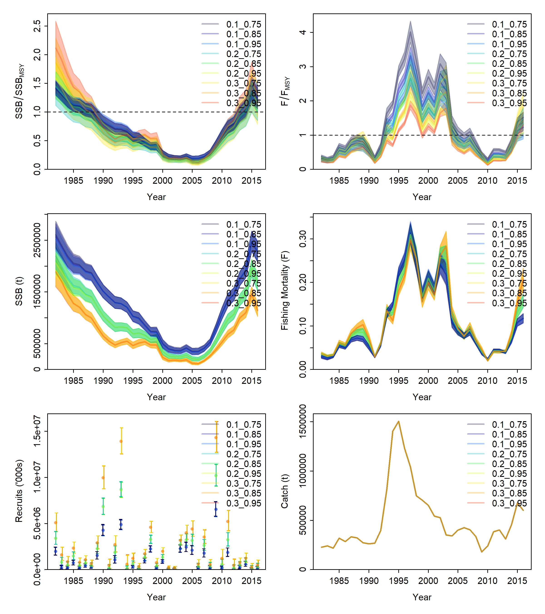
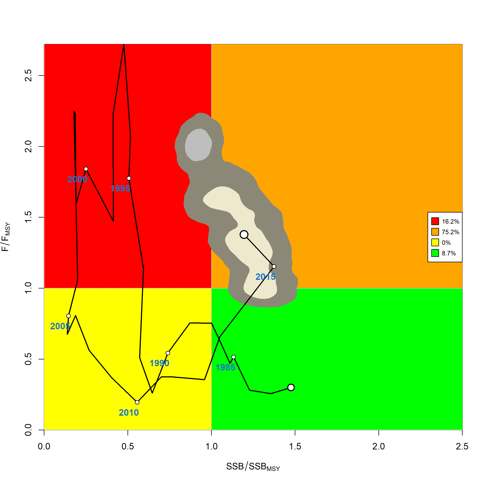

2. Set-up a job array to run on OSG
Nicholas Ducharme-Barth
2022-10-15
Source:vignettes/b_model_ensemble.Rmd
b_model_ensemble.RmdIn this example we will set up and run a simple job array of Stock Synthesis models on OSG and show how results can be combined in a model ensemble. We assume that you have already set-up your OSG environment to work with ssgrid. If not, please check out this guide. Here we use example Stock Synthesis input files1 that are distributed with ssgrid but these can be substituted for any Stock Synthesis files read in using r4ss.
The first step is to load ssgrid. We will also use both r4ss and ss3diags but will reference those functions directly.
The Stock Synthesis input files:
ss_controlss_datass_starterss_forecast
are automatically available upon loading the ssgrid package.
We also need to define the directory where we are going to build the files needed to run our job array.
array_directory = paste0(getwd(),"/example/ensemble/")
# check if directory exists, otherwise create it
if(!file.exists(array_directory)){
dir.create(array_directory)
}Here I create a directory within my default working directory but you can change/name this to anything you want. This is where the Stock Synthesis files will get written into, and where results from OSG will get downloaded.
The next step is set up the different model configurations to investigate as a part of our model ensemble or job array. In this simple example, we are assume that natural mortality (M) and steepness (h) are fixed but there is uncertainty regarding the assumed values. Let us consider three alternative hypotheses for each value and a full-factorial ensemble of possible combinations:
testing_options = expand.grid(M=c(0.1,0.2,0.3),
h=c(0.75,0.85,0.95))Now we can write the Stock Synthesis files into sub-directories of array_directory, making sure to modify the control file to have the appropriate settings for M and h.
for(i in 1:nrow(testing_options))
{
# create sub-directory
tmp_name = paste0(testing_options[i,],collapse = "_")
tmp_dir = paste0(array_directory,tmp_name,"/")
dir.create(tmp_dir,recursive = TRUE)
# modify input file - M
tmp_ctl = ss_control
pointer = grep("NatM_p_1_Fem_GP_1",rownames(tmp_ctl$MG_parms),fixed=TRUE)
tmp_M = testing_options$M[i]
tmp_ctl$MG_parms$LO[pointer] = tmp_M - 0.1*tmp_M
tmp_ctl$MG_parms$HI[pointer] = tmp_M + 0.1*tmp_M
tmp_ctl$MG_parms$INIT[pointer] = tmp_M
tmp_ctl$MG_parms$PRIOR[pointer] = tmp_ctl$MG_parms$INIT[pointer]
# modify input file - h
pointer = grep("SR_BH_flat_steep",rownames(tmp_ctl$SR_parms),fixed=TRUE)
tmp_h = testing_options$h[i]
tmp_ctl$SR_parms$LO[pointer] = 0.2
tmp_ctl$SR_parms$HI[pointer] = 0.999
tmp_ctl$SR_parms$INIT[pointer] = tmp_h
tmp_ctl$SR_parms$PRIOR[pointer] = tmp_ctl$SR_parms$INIT[pointer]
# write input files
r4ss::SS_writectl(ctllist = tmp_ctl, outfile = paste0(tmp_dir,"control.ss"))
r4ss::SS_writedat(datlist = ss_data, outfile = paste0(tmp_dir,"data.ss"))
r4ss::SS_writeforecast(mylist = ss_forecast, dir = tmp_dir)
r4ss::SS_writestarter(mylist = ss_starter, dir = tmp_dir)
# clean-up
rm(list=c("tmp_name","tmp_dir","tmp_ctl","pointer","tmp_M","tmp_h"))
}Now that all the input files are created we can upload the directories to OSG, set up the job array, and run the job! When modifying this code for your purposes, make sure to request enough memory and disk space in osg_condor_submit_create().
# open a connection to OSG via ssh
osg_session = osg_connect(unix_name = "your.username", login_node = "login05.osgconnect.net")
# upload the directory
osg_upload_ss_dir(session = osg_session,
unix_name = "your.username",
login_node = "login05.osgconnect.net",
local_dir_path = array_directory,
local_dir_names = list.dirs(array_directory,full.names=FALSE,recursive=FALSE),
remote_dir_path = "example/ensemble/",
files_to_upload = c("control.ss","data.ss","forecast.ss","starter.ss"),
target_dir_path = "target_dir_files/",
target_dir_txt_name = "target_dir.txt")
# define job executable to run a Stock Synthesis model for each model defined by testing_options
osg_wrapper_create(session=osg_session,
unix_name = "your.username",
login_node = "login05.osgconnect.net",
wrapper_actions = c("00_run_ss"))
# create condor_submit script
osg_condor_submit_create(session=osg_session,
unix_name = "your.username",
login_node = "login05.osgconnect.net",
c_memory="600MB",
c_disk="600MB",
c_input_files=c("Start.tar.gz","ss_linux"),
c_project="osg.your_project",
c_target_dir_path="target_dir_files/target_dir.txt",
c_singularity="r:4.0.2",
overwrite = TRUE,
verbose = TRUE)
# copy Stock Synthesis executable into each directory on OSG
osg_multi_copy(session=osg_session,
unix_name = "your.username",
login_node = "login05.osgconnect.net",
remote_source_path = c("ss_executable/3.30.16.00_safe/"),
files_to_copy = c("ss_linux"),
remote_paste_path = paste0("example/ensemble/",list.dirs(array_directory,full.names=FALSE,recursive=FALSE),"/"))
# launch the job!
osg_execute(session=osg_session,
unix_name = "your.username",
login_node = "login05.osgconnect.net")Success! All nine models will now be run simultaneously using OSG’s HTcondor high-throughput computing network. It may take a minute or so (depending on the requirements listed in osg_condor_submit_create()) for your jobs to make it to the front of the queue. However, all jobs should be finished running in a few minutes since this example uses a simple model. You can monitor the status of your job using osg_monitor() which is just a wrapper around condor_q if you are directly logged into OSG via the terminal.
Once the jobs finish running, you can go ahead and download the results using osg_download(), and then close the connection to OSG. Here we will download the model results, compressed as End.tar.gz. We will also specify that we want to un-tar the results after downloading.
osg_download_ss_dir(session = osg_session,
unix_name = "your.username",
login_node = "login05.osgconnect.net",
remote_dir_stem="example/ensemble/",
remote_dirs=list.dirs(array_directory,full.names=FALSE,recursive=FALSE),
download_dir_stem=array_directory,
files_to_download=c("End.tar.gz"),
untar_local=TRUE,
clean_remote=FALSE,
delete_remote=FALSE,
verbose=TRUE)
ssh::ssh_disconnect(osg_session)Now that our models our downloaded, we can use existing functionality in the r4ss and ss3diags packages to extract the results and combine them to form a model ensemble.
# get the results
tmp_models = r4ss::SSgetoutput(dirvec= paste0(array_directory,list.dirs(array_directory,full.names=FALSE,recursive=FALSE),"/"))
names(tmp_models) = list.dirs(array_directory,full.names=FALSE,recursive=FALSE)
# use ss3diags::SSdeltaMVLN() to generate uncertainty using the estimated variance-covariance matrix in a Monte Carlo simulation
# We generate 10,000 samples per model and assume each has equal weight in the ensemble.
set.seed(123)
mvn_samples.list = as.list(rep(NA,length(tmp_models)))
for(i in seq_along(tmp_models))
{
mvn_samples.list[[i]] = SSdeltaMVLN(tmp_models[[i]],mc=10000,weight = 1, run = names(tmp_models)[i], plot = FALSE)$kb
}
# combine samples across models
mvn_samples = do.call("rbind", mvn_samples.list)Plot the individual model results.
png(file = paste0(array_directory,"MVLN_Trjs.png"), width = 8, height = 9, res = 300, units = "in")
r4ss::sspar(mfrow=c(3,2),plot.cex = 0.8)
ss3diags::SSplotEnsemble(mvn_samples, add =TRUE)
dev.off()
Plot the combined ensemble results.
png(file = paste0(array_directory, "/kobe_kernel",".png"), width = 9, height = 9, res = 300, units = "in")
ss3diags::SSplotKobe(mvn_samples,posterior = "kernel") # show CIs with 2d-Kernel
dev.off()
Additionally, as a part of the job executable defined by osg_wrapper_create(), all jobs get returned with a text file runtime.txt. This gives the actual execution time of the job in seconds, excluding file transfer and waiting in the queue. We can extract this value for each model and sum across models to see how long it actually took to run our nine example models on OSG.
runtime_vec = rep(NA,nrow(testing_options))
for(i in seq_along(runtime_vec))
{
runtime_vec[i] = scan(paste0(array_directory,list.dirs(array_directory,full.names=FALSE,recursive=FALSE)[i],"/runtime.txt"))
}
avg_runtime_m = mean(runtime_vec)/60
total_runtime_m = sum(runtime_vec)/60In this simple example each model took just over a minute to run, with a little over nine minutes of total runtime.